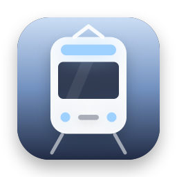
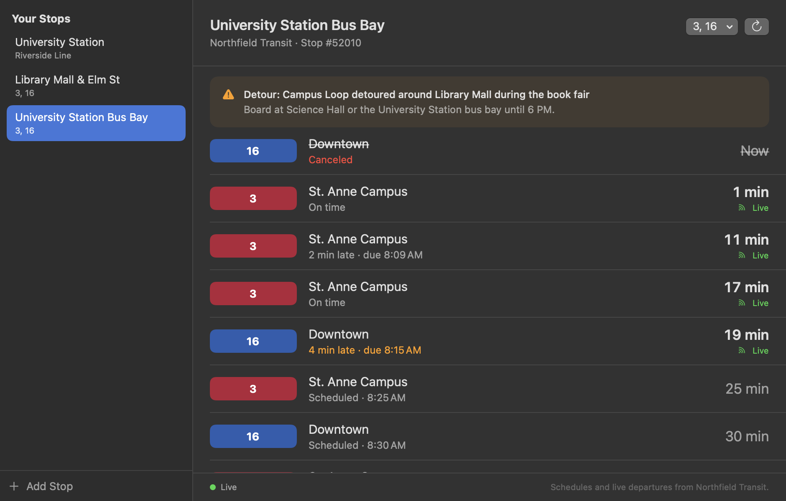

Next Departures
Your stop's next bus and train, live, in the menu bar. Delays, cancellations and alerts from the agency's own feed, for Minneapolis and Saint Paul or any city with GTFS-realtime.
Thanks for downloading! If it gets you to the stop on time, a star on GitHub helps other people find it.
free · open source · macos 14+ · any gtfs-realtime feed · no tracking
What you get

- The next departures from each of your stops, with the route's color, where it's headed and the minutes until it leaves.
- Live where the feed has it: on time, running late or early. Delays further up the line carry down to your stop. Rides with no prediction say "Scheduled".
- Canceled rides, skipped stops and alerts for your stops and routes, so you don't wait for a bus that isn't coming.
- Both directions as one stop, a route filter, a big departure board window, and the countdown in the menu bar if you want it.
- Extras: any agency's feeds by pasting their addresses, and a
next-departurescommand line tool that prints departures and alerts as text or JSON.
Where it works
- Minneapolis and Saint Paul, ready to go: Metro Transit's METRO Green and Blue Lines, bus rapid transit and regional buses, live.
- University of Minnesota campus buses: the Campus Connector and the circulators, routes 120 to 125, from Metro Transit's timetable.
- Anywhere else with GTFS: paste an agency's schedule zip, plus its GTFS-realtime trip updates and alerts for live times. The Mobility Database lists over a thousand live feeds.
Questions
Does it know where I am?
No. It never asks for your location and sends nothing about you: no account, no analytics. It downloads the agency's whole schedule and live feed, straight from the agency, and picks out your stops on your Mac.
What does it connect to?
Only the transit feeds you use: svc.metrotransit.org for Metro Transit, and the addresses you add. It runs in the App Sandbox with outgoing connections as its only entitlement, refuses redirects to other sites, and CI checks every build. The details are in SECURITY.md.
How much data does it use?
The schedule is downloaded once and checked daily; Metro Transit's is about 27 MB and changes about weekly. The live feed is fetched every 30 seconds only while the menu or the window is open, about a megabyte each time for Metro Transit. With both closed, it fetches nothing.
Why does a ride say "Scheduled"?
The agency's feed has no prediction for it yet, often because the bus hasn't started its trip. The time is the timetable's. Rides marked live come straight from the feed.
Is there a widget?
Not yet. A widget needs a signed app extension, which comes with a Developer ID signature, and it's next on the roadmap.